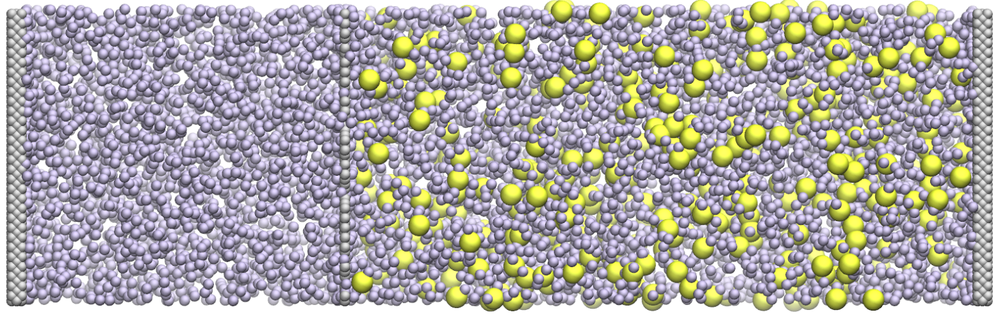
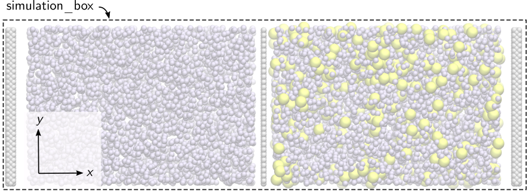
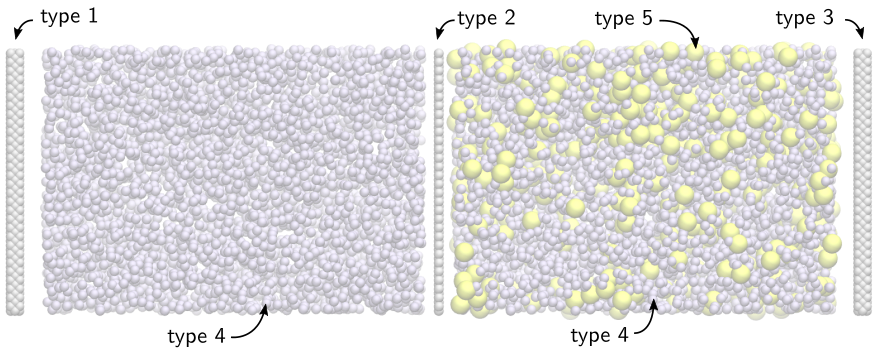
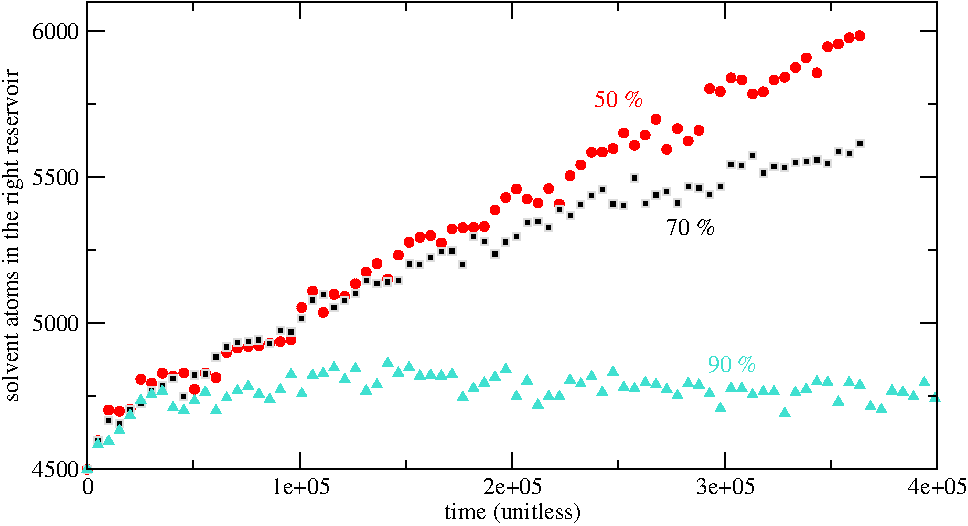
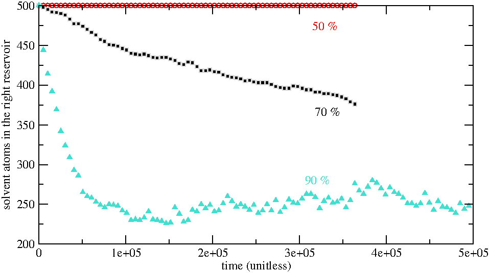

Osmosis flow through a porous membrane
Binary lennard-jones fluid flow through a rigid porous membrane
 Figure: A fluid made of a solute (large yellow spheres and solvent (small blue-ish spheres)) flowing though a porous membrane made of a single layer of atoms. The two gray layers on each sides are pistons ensuring that no evaporation occurs.
The objective of this tutorial is to build a molecular dynamics system made of a rigid porous membrane, two reservoirs containing a solute and a solvent, and two pistons. There are X main parts to this tutorial:
- System creation- First,
- System equilibration - Then,
- Production run - Third,
If you are new to LAMMPS, I recommend you to follow this simpler tutorial first.
Click here if you are looking for help with your project, if you want to support me (for free or not), or if you have any suggestions for these tutorials.
System creation
Create a folder named SystemCreation, and within this folder, create a LAMMPS input file called input.lammps.
Simulation initialisation
Let us define some general parameters:
boundary s p p
pair_style lj/cut 2.5 Here we impose that the boundary conditions along the \(x\), \(y\), and \(z\)
axis are non-periodic shrink-wrapped, periodic, and periodic, respectively. With
style "s", the position of the face is set so as to integrate the atoms in that
dimension (shrink-wrapping), no matter how far they move. Then we set the pair style
as Lennard-Jones, with a cut-off.
Note that we did not set the units, atom_style, or dimension of the simulation,
as is common to do, because we are using the default value of LAMMPS,
respectively lj, atomic, and 3 (for 3D).
Region creation
The first step toward the creation of the system is to define regions of space.
The first region is a parallelepiped rectangle corresponding to the initial
simulation box.

Figure: Molecular dynamics system simulation
box.
Let us set the lattice to face-centered cubic (fcc) for the future positioning of the solid wall atoms, define the simulation_box region, and use it to create the initial box:
# ------------- System definition
lattice fcc 1
region simulation_box block -50 50 -15 15 -15 15
create_box 5 simulation_box
The "5" in create_box indicates that the simulation will contain 5 types of
atoms (solute, solvent, membrane, and pistons (x2)), see below. Then, let us
define 5 regions that will be use to place the atoms.

Figure: Molecular dynamics system with all
five regions, from left to right : piston_left, fluid_left,
membrane, fluid_right, and piston_right.
region piston_left block -49 -48 INF INF INF INF
region fluid_left block -45 -2 INF INF INF INF
region membrane block -0.25 0.25 INF INF INF INF
region fluid_right block 2 45 INF INF INF INF
region piston_right block 48 49 INF INF INF INFWith the INF keyword, the region encompass the whole simulation box in that direction.
Place the atoms
The second step is to add the atoms within the system.

Figure: Molecular dynamics system with all
five types of atoms: solid (types 1, 2 and 3) and fluid (types 4 and 5).
create_atoms 1 region piston_left
create_atoms 2 region membrane
create_atoms 3 region piston_right
create_atoms 4 random 5000 654514 fluid_left
create_atoms 4 random 4500 654514 fluid_right
create_atoms 5 random 500 424514 fluid_rightAtoms of types 1, 2, and 3 are placed on the fcc lattice previously defined. The atoms the fluid (types 4 and 5) are placed randomly. Solute (type 5) is placed only on the right side of the membrane, so that the difference in osmotic pressure will induce the flow of solvent.
Settings
Let us define the simulation settings.
# ------------- Simulation settings
mass * 1
pair_coeff 1*4 1*4 1.0 1.0
pair_coeff 5 5 2.0 3.0 The mass of all the atoms are set to 1 (unitless). The Lennard-Jones pair coefficient
between atoms of types 1 to 4 are set to 1 for both the depth of the potential
well \(\epsilon\) and the distance at which the particle-particle potential
energy is zero \(\sigma\) (i.e. the size of the particle). For the solute (type 5),
both \(\epsilon\) and \(\sigma\) are set to larger values, thus making the particles
of the solute effectively larger and more attractive.
By default, the cross-parameters (i.e. between species \(i\) and \(j\)) are automatically calculated by LAMMPS.
Here, let us tune slightly these cross- parameters. First, let us
reduce slightly the affinity between the solvent and the walls (to reduce
unnecessarily large adsorption), and reduce even more the affinity between
the solute and the wall, and also increase the value of \(\sigma\):
pair_coeff 1*3 4 0.8 1
pair_coeff 1*3 5 0.1 3.0The second line will help prevent the solute to cross the porous membrane too easily.
Output and run
Let us dump the atom position for visualisation purpose,
# ------------- Output
dump mydmp all atom 1 dump.lammpstrj
thermo 10and finally minimise the energy of the system, and print the final position of the atoms.
# ------------- Run
minimize 1.0e-4 1.0e-6 1000 10000
write_data data.lammps pair ijWith the pair ij keyword, LAMMPS will print the simulation settings (mass and pair_coeff) in the data.lammps file.
System equilibration
Create a second folder alongside the SystemCreation folder, and call it Equilibrium. Create a new LAMMPS input file called input.lammps in it.
Initialisation
Start by re-writing the boundary and pair_style (these information are not saved by the write_data command), and import write_data using the read_data command:
boundary s p p
pair_style lj/cut 2.5
read_data ../SystemCreation/data.lammpsRegion and groups
Let us define a region corresponding to the right side of the porous membrane, which will be used later for recording which atoms are crossing the membrane.
region right block 0 INF INF INF INF INFThen, let us group the atoms into groups, which will allow us to control them more easily later:
group solid type 1 2 3
group piston_right type 3
group membrane type 2
group piston_left type 1
group fluid type 4 5
group solvent type 4
group solute type 5Small optimization
Since we anticipate that the atoms of the solid will be frozen, we don't want LAMMPS to try to built neighbor list between the solid atoms.
neigh_modify exclude group solid solidThis command will slightly speeds up the simulation, but won't influence the result.
Dynamics
Now, let us address the molecular dynamics of the atoms. First, let us give an initial temperature of 1 (unitless) to the atoms of the fluid:
velocity fluid create 1.0 4928459 mom yes rot yes dist gaussianThen, let us apply the fix nve to all the atoms in order to the molecular dynamics (i.e. the update of the atom positions from the force calculation) to be performed:
fix mynve all nveNote that nve is applied to all atoms, even to solid atoms, even though they will be maintained frozen (they will be maintained frozen thanks to setforce and addforce fixes, see below). For the next step, let us control the temperature of the atoms of the fluid using a Langevin thermostat:
compute temperature_fluid fluid temp
fix mylgv fluid langevin 1.0 1.0 0.1 1530917 zero yes
fix_modify mylgv temp temperature_fluid
The fix_modify, which uses the temperature calculated by the compute temperature_fluid,
ensures that the temperature of the fluid is used as a reference temperature.
Then, let us force the membrane to remain frozen by canceling the force
applied on the atoms of the membrane at every timestep:
fix mysf1 membrane setforce 0 0 0In addition, we want to freeze the piston, but still allow them to move as rigid bodies along the \(x\) direction. To do so, let us combine the setforce and aveforce commands.
fix mysf2 piston_left setforce NULL 0 0
fix mysf3 piston_right setforce NULL 0 0
variable F equal 0.01
fix myaf1 piston_left aveforce ${F} NULL NULL
fix myaf2 piston_right aveforce -${F} NULL NULLA force \(F\) is applied on the atoms of the piston along \(x\) is order to slightly compress the fluid.
Outputs
In order to make sure that the dynamics is working fine, let us print out a few information, such as the piston position and number of fluid atoms in the right reservoir:
# ------------- Output
variable solvent_right equal count(solvent,right)
variable solute_right equal count(solute,right)
variable position_piston_left equal xcm(piston_left,x)
variable position_piston_right equal xcm(piston_right,x)
fix myat1 all ave/time 1000 1 1000 v_solvent_right file solvent_right.dat
fix myat2 all ave/time 1000 1 1000 v_solute_right file solute_right.dat
fix myat3 all ave/time 1000 1 1000 v_position_piston_left file position_piston_left.dat
fix myat4 all ave/time 1000 1 1000 v_position_piston_right file position_piston_right.dat
dump mydmp all atom 1000 dump.lammpstrj
thermo_modify temp temperature_fluid
Run
Finally, let us run the equilibration for 1 million timesteps and save the final state of the simulation:
# ------------- Run
run 1000000
write_data data.lammps pair ij
Production run
Create a thidr folder alongside the two current folders, and call it Porosity0.5. Create a new LAMMPS input file called input.lammps in it.
Initialisation and membrane drilling
Let us start by copy-pasting similar commands as previously:
# LAMMPS input script
boundary s p p
pair_style lj/cut 2.5
read_data ../Equilibrium/data.lammps
region right block 0 INF INF INF INF INF
group solid type 1 2 3
group piston_right type 3
group membrane type 2
group piston_left type 1
group fluid type 4 5
group solvent type 4
group solute type 5
neigh_modify exclude group solid solidThen, let us delete randomly \(50\%\) of the atoms of the membrane:
region membrane block -0.25 0.25 INF INF INF INF
delete_atoms porosity membrane 0.5 482793 This command deletes \(50\%\) of the atoms of the membrane region. The last
number is a seed, change its value to generate different pattern, and different
porosity can be obtained by changing the fraction of deleted atoms:

Figure: Membranes with different degree of deleted atoms
Dynamics and data printing
Finally, let us re-enter the dynamics setting used in the equilibration step, and print information into data file:
fix mynve all nve
compute temperature_fluid fluid temp
fix mylgv fluid langevin 1.0 1.0 0.1 1530917 zero yes
fix_modify mylgv temp temperature_fluid
thermo_modify temp temperature_fluid
fix mysf1 membrane setforce 0 0 0
fix mysf2 piston_left setforce NULL 0 0
fix mysf3 piston_right setforce NULL 0 0
variable F equal 0.01
fix myaf1 piston_left aveforce ${F} NULL NULL
fix myaf2 piston_right aveforce -${F} NULL NULL
variable solvent_right equal count(solvent,right)
variable solute_right equal count(solute,right)
variable position_piston_left equal xcm(piston_left,x)
variable position_piston_right equal xcm(piston_right,x)
fix myat1 all ave/time 10000 1 10000 v_solvent_right file solvent_right.dat
fix myat2 all ave/time 10000 1 10000 v_solute_right file solute_right.dat
fix myat3 all ave/time 10000 1 10000 v_position_piston_left file position_piston_left.dat
fix myat4 all ave/time 10000 1 10000 v_position_piston_right file position_piston_right.dat
fix myat5 all ave/time 10 1000 10000 f_mysf1[1] file force_membrane.dat
dump mydmp all atom 10000 dump.lammpstrj
thermo 10000
run 100000000 Here I plot the number of solvent atoms in the right reservoir as a function
of time for different membrane porosity:

Figure: Number of solvent atoms in the right reservoir as a
function of time.
Looking at the solute as a function of time give hint on whether the membrane is
semi-permeable or not:

Figure: Number of solute atoms in the right reservoir as a
function of time.
Going further